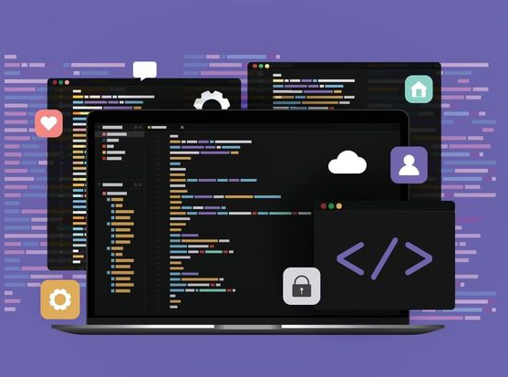
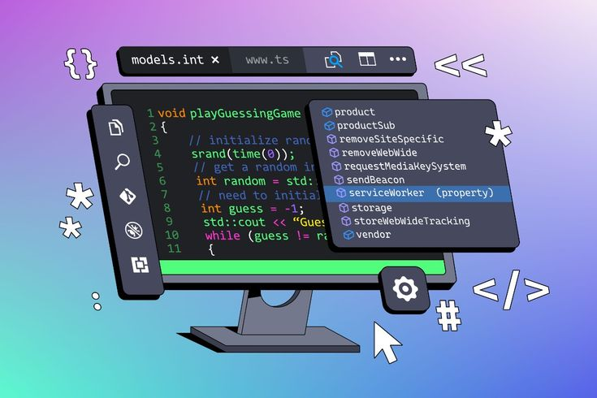
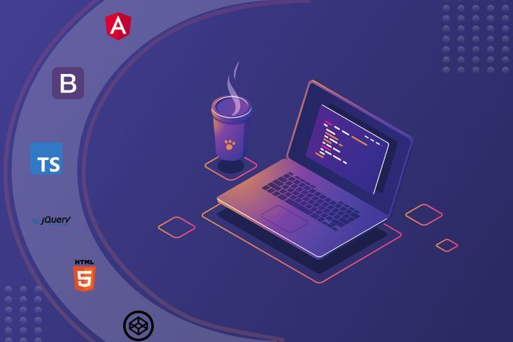
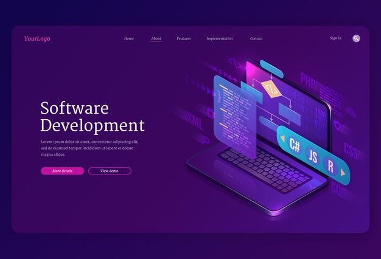

ForceTechSistema de gestión administrativa para gimnasios bajo el marco SCRUM. Control de usuarios, membresías y horarios.
Ver Repositorio
ForceTechSistema de gestión administrativa para gimnasios bajo el marco SCRUM. Control de usuarios, membresías y horarios.
Ver Repositorio
Inventory SyncSistema de inventario colaborativo enfocado en la gestión de stock y sincronización de datos con Git.
Ver Repositorio
Gestor CulturalAdministrador con persistencia en JSON. Manejo avanzado de excepciones y validación de datos técnicos.
Ver Repositorio SOC Analyzer
SOC AnalyzerScript de automatización para análisis de logs y detección de patrones sospechosos para respuesta ante incidentes.
Próximamente
Web PortafolioInterfaz responsiva con animaciones CSS complejas y efectos neón para una marca personal profesional.
Ver RepositorioCentralización de trayectoria académica en la USAC y certificaciones en IA y Seguridad Informática.
Ver Perfil